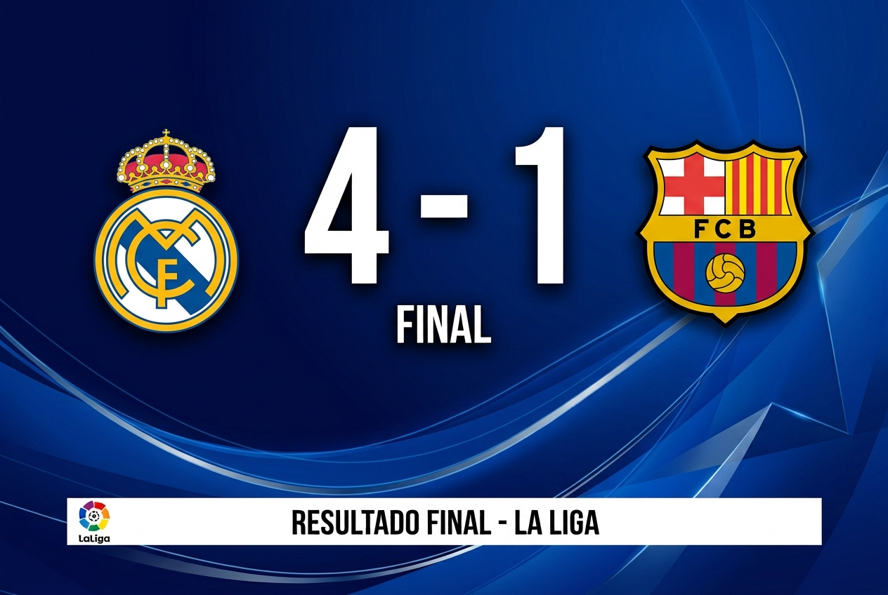

Últimos Resultados
Partidazo entre el Real Madrid y el Barcelona en la jornada más esperada del año. Los merengues se llevaron la victoria con un marcador de 4-1, gracias a un hat-trick de su delantero estrella. Los aficionados disfrutaron de un espectáculo lleno de emociones y goles.